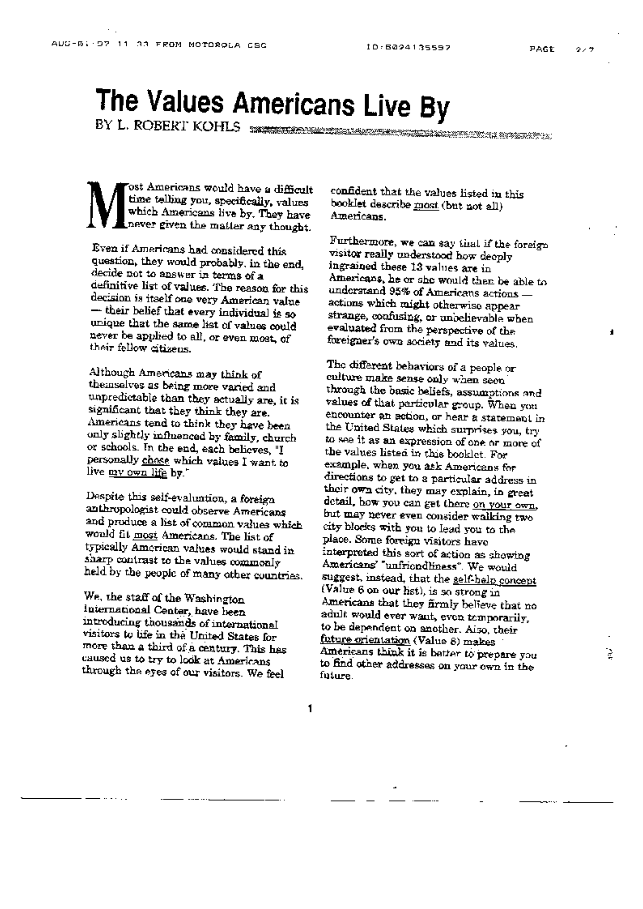

| U.S. Values | Some Other Country’s Values |
|---|---|
| Personal Control over the Environment | Fate |
| Change | Tradition |
| Time and Its Control | Human Interaction |
| Equality | Hierarchy/Rank/Status |
| Individualism/Privacy | Group’s Welfare |
| Self-Help | Birthright Inheritance |
| Competition | Cooperation |
| Future Orientation | Past Orientation |
| Action/Work Orientation | “Being” Orientation |
| Informality | Formality |
| Directness/Openness/Honesty | Indirectness/Ritual/”Face” |
| Practicality/Efficiency | Idealism |
| Materialism/Acquisitiveness | Spiritualism/Detachment |
After a dinner, a guest commented,
You have maintained the best traits of 2 cultures.
He was being a good guest, paying a compliment to the host.
But in case he meant it, wondered,
what are the values of 2 cultures, one that was I born into and the one I grew up in.
When I was preparing for an overseas assignment, 2 decades ago, I came across this article.

I didn’t pay much attention to it at the time. I was busy getting ready for the role.
Recently I came across the full article on-line.
The article was written by L. Robert Kohls, who1
… was the former director of training for the United States Information Agency where he wrote books for both Americans living abroad, and foreigners coming to America. A native of Iowa and a Korean War veteran, he and his wife moved to Korea in 1953 and founded a Mennonite orphanage, grade school, middle school and high school. Later he returned to the United States where he taught classes on comparative religions and world cultures. Sadly he passed away in 2006.
Robert opens with this,
Most Americans would have a difficult time telling you, specifically, what the values are which Americans live by. They have never given the matter any thought. (and) …their belief that every individual is so unique that the same list of values could never be applied to all, or even most, of their fellow citizens.
I have not yet met a person that displayed all 13 values. However, during my years of living in America, I have observed that, “…as a group, Americans value these traits as positive and lives by them.”
## U.S. Values
- Personal Control over the Environment
- Change
- Time and Its Control
- Equality
- Individualism/Privacy
- Self-Help
- Competition
- Future Orientation
- Action/Work Orientation
- Informality
- Directness/Openness/Honesty
- Practicality/Efficiency
- Materialism/Acquisitiveness
At the end of the article, Robert offers this contrast between the young, experimental nation of America vs. a more established, traditional country.
Either OR And
During the years I was adjusting to life in America, I didn’t think much about the old culture of my parents.
Nor did I think about continuing or preserving that way of life.
Looking back as well as looking forward, I am glad that I experienced dual culture. [Minus those years of adjusting, as a teenager.]
Dual culture has meant an added insights, a knowledge, and a foundation.
Starting as an intersection \(\bigcap\) and growing into an union \(\bigcup\) of good things in both cultures.
Recently, a neighbor dropped off a 8.5 by 11 inch printout of the following,
9 But ye are a chosen generation, a royal priesthood, an holy nation, a peculiar people; that ye should shew forth the praises of him who hath called you out of darkness into his marvellous light;
10 Which in time past were not a people, but are now the people of God: which had not obtained mercy, but now have obtained mercy.
Thank you people of Korea, United States and the Household of Faith
Robert Kohls Involvement in Korea
Robert Kohls served in Korea during World War II2.
In 1953, he returned to Korea as a representative of the Mennonite Church in Korea.
In addition, he created boys’ orphanage in Taegu, Korea, 1950s; founded middle school, high school, and vocational school in Korea.
Below is a Chat GPT Summary of his work on behalf of the Korean people.
L. Robert Kohls had significant involvement in Korea through his work in cross-cultural training and education, focusing on enhancing intercultural understanding between Koreans and Americans. His contributions in Korea were part of his broader efforts to promote intercultural communication and understanding.
Key Aspects of Kohls’ Involvement in Korea
Educational Initiatives: Kohls participated in various educational programs aimed at helping Koreans understand American culture and vice versa. These programs were designed to ease cultural transitions for students, professionals, and expatriates living in or moving between Korea and the United States.
Cultural Training Programs: He developed and conducted cross-cultural training sessions tailored for Koreans and Americans, often through seminars and workshops. These sessions focused on cultural values, communication styles, and practical skills for navigating cultural differences.
Peace Corps and USIA: Kohls’ association with organizations such as the Peace Corps and the United States Information Agency (USIA) brought him to Korea. His work involved training Peace Corps volunteers and other expatriates to understand and adapt to Korean culture, enhancing their effectiveness and fostering positive relations.
Publications and Resources: Kohls authored materials that were used in Korea to facilitate better understanding of American cultural values and practices. His writings, including “The Values Americans Live By,” were instrumental in educational and training settings, providing valuable insights into American cultural norms for Korean audiences.
Impact of Kohls’ Work in Korea
- Improved Cross-Cultural Understanding: Kohls’ efforts helped bridge cultural gaps between Koreans and Americans, promoting mutual understanding and respect. His training programs equipped individuals with the knowledge and skills needed to navigate cultural differences effectively.
- Enhanced Educational Exchange: By facilitating better cultural awareness, Kohls’ work supported educational exchange programs, helping students and educators from both countries to adapt more successfully to their new cultural environments.
- Legacy of Intercultural Communication: Kohls left a lasting impact on the field of intercultural communication in Korea, with his teachings continuing to influence cross-cultural training programs and educational curricula.
In summary, L. Robert Kohls played a crucial role in fostering intercultural understanding between Korea and the United States. His work in cross-cultural training and education helped numerous individuals navigate cultural differences, promoting positive and effective interactions across cultures.
Footnotes
from the opening paragraph of https://sacredheartnorfolk.org/wp-content/uploads/2015/08/Values-of-American-Cultures.pdf↩︎
https://www.encyclopedia.com/arts/educational-magazines/kohls-l-robert-1927-2006↩︎